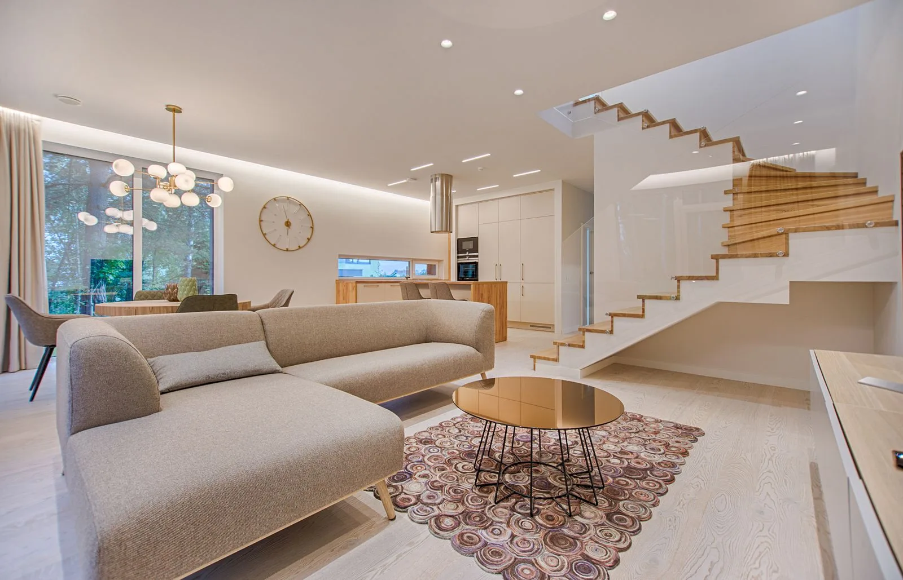
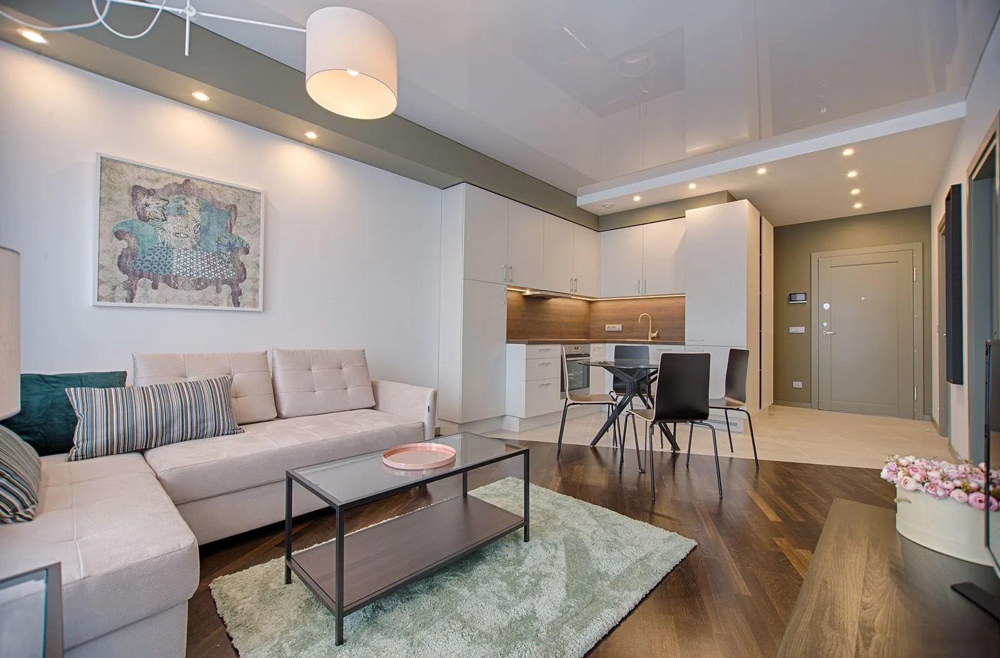

SÉLECTION KIRO
La maison ouverte
3 chambres · Jardin
Organiser une visiteMAISON KIRO / LIEUX DE VIE
Architecture ouverte. Vie au grand air.Trois biens illustratifs, trois façons de vivre.
SÉLECTION KIRO
3 chambres · Jardin
Organiser une visite
SÉLECTION KIRO
2 chambres · Terrasse
Organiser une visite
SÉLECTION KIRO
1 chambre · Salon ouvert
Organiser une visiteÀ vos côtés
Le quartier, la lumière, les déplacements du quotidien : votre recherche commence par votre façon de vivre. Nous rapprochons ces priorités des caractéristiques de chaque bien.
Faisons connaissance
Essayez ce parcours avec des informations fictives. La demande reste dans votre navigateur ; aucun message n’est envoyé.